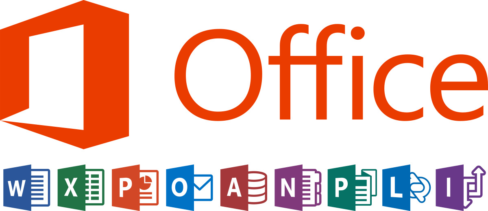
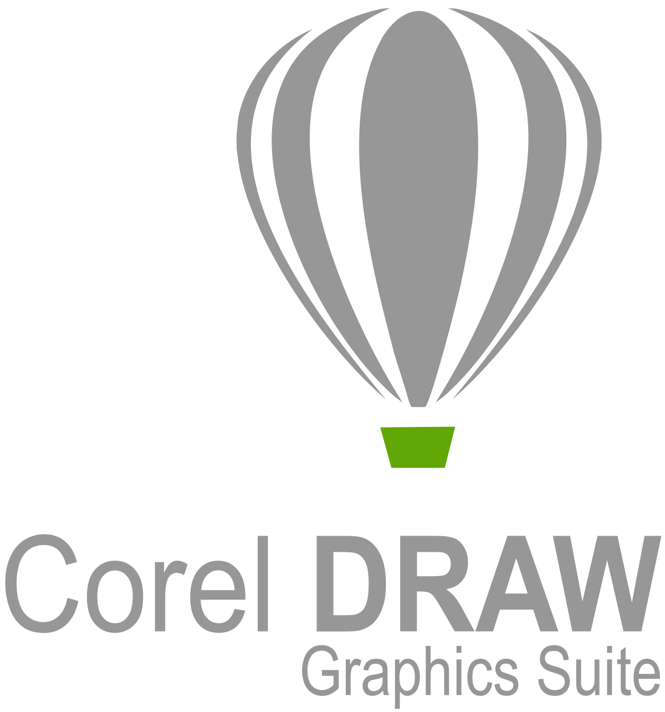

MAYRA JOHANA YENQUE MEDINA
Ingeniera Informática
910977427
El Recodo MZ A Lt 1 - Chepén
majo_virgo15@outlook.es
PERFIL PERSONAL
EXPERIENCIA LABORAL
CONOCIMIENTOS
INFORMACIÓN ADICIONAL
CONOCIMIENTOS:
Ofimática nivel de usuario: Microsoft Office (Word, Excel, Power Point, Access).
Sistemas operativos: Windows 7 y 8.
Programa matemático y estadístico: IBM SPSS Statistics 23 (nivel básico).
Gestores de Base de Datos: SQL Server 2008 R2 y MySQL (nivel básico).
Software para diseños: CorelDRAW Graphics Suite y Photoshop (nivel básico).


FORMACIÓN COMPLEMENTARIA:
Participación en calidad de asistente de la Conferencia:
“GESTIÓN DE PROCESOS DE NEGOCIOS - BPM” – HERRAMIENTA ADONIS
, organizado por el Comité Local Chepén – Guadalupe del Consejo Departamental de La Libertad.
JUNIO 2017
Participación en la Conferencia:
“REDES SOCIALES APLICADO A LOS NEGOCIOS”
, organizado por el Comité Local Chepén – Guadalupe del Consejo Departamental de La Libertad.
JUNIO 2019
PROYECTO PERSONAL:
Desarrollo de Página Web usando HTML, CSS y la librería Bootstrap 4 para maquetación.